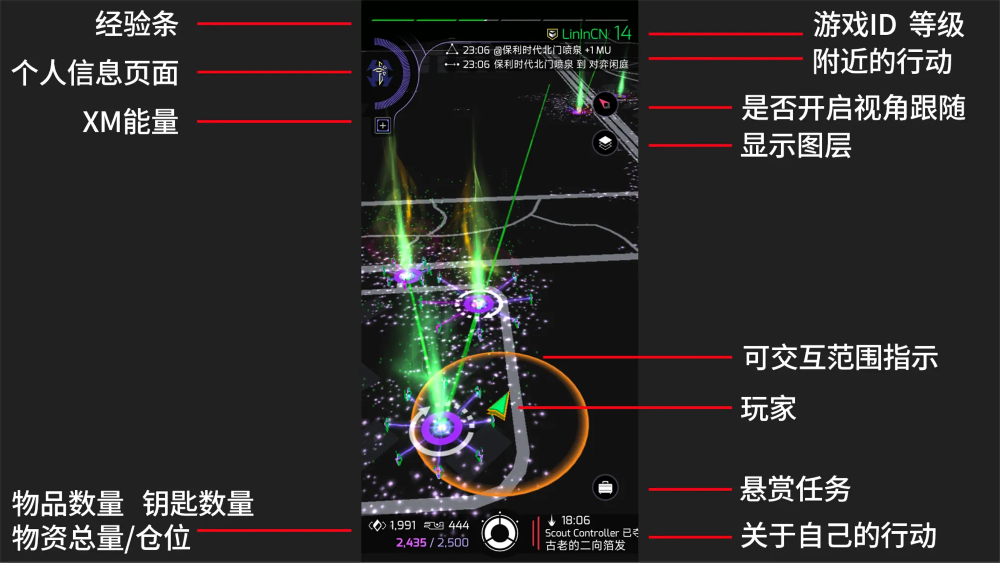

游戏主界面#

当您打开游戏后，您看到的页面如上图所示。图中标注了四周元素的基本含义。游戏中的地图为真实世界的简化版
经验条：经验条显示了您当前等级的经验值（其中间隔并无实际意义）
个人信息页面： 点击后可进入个人主页
XM能量：各种行动都需要使用XM能量。XM能量可通过xxx补充
仓位：
ingress的仓位默认为2000，仓位不会随着等级提升改变。您只有以下两种办法增加存储空间：
-
充值会员
当您在商店充值会员后，您可以立刻获得500额外仓位。此额外仓位仅在会员生效期间有效
-
购买钥匙箱
在商店中，您可以购买钥匙箱来存放钥匙（key），存入钥匙箱的钥匙将不会计入仓位，即增加了额外的存储空间
您总共可以购买5个钥匙箱，每个钥匙箱可存放100把钥匙
游戏ID：显示您的游戏名称和当前等级
附近的行动：此处会显示附近玩家（包括自己）产生的行动
视角跟随： 激活后画面将自动根据您所处方位自动旋转
显示图层： 根据不同游戏需求在地图上显示不同的标记
可交互指示范围：大部分与Portal的交互、行动仅能在黄色范围内
悬赏任务：每日任务页面，依据要求完成任务将获得奖励。特殊活动也将显示在此处
关于自己的行动：玩家回复、与玩家相关的活动将在此处显示
补充说明#
- 游戏的主色调为绿色或蓝色，这与玩家阵营有关
- 示例图中的 Portal 下有白色环形箭头，这与 扫描能量塔 操作有关
- 示例图中 Portal 之间有绿色连线，这与 连线 操作有关
个人主页#

当您点击游戏主界面的【个人信息页面】后，则来到个人主页，个人主页信息较长，您可以向下翻阅看到更多信息
等级与名称： 与主页面相同
图标： 点击此处可以更换【此处】以及【游戏主界面左上角】的图标与背景
经验：
- 毕生AP： 此处标注了从1级到当前级别所有的经验值之和
- x度AP： 当特工达到16级满级时，可以进行转生，此处显示了转生次数与当前转生的经验值
- 第x级尚需： 此处显示了玩家抵达下一个等级需要的额外徽章要求，详细内容将在【等级系统】中介绍
个人主页链接： 点击后分享，其它特工点击链接将直接出现特工个人主页
头像： 点击后可改变特工在地图上显示的样式，其它特工查看个人主页时也可看到
Niantic账号主页： 游戏制作公司Niantic的个人账号页面（基本无实际用处）
个人信息页面： 点击此处后将复制账号的所有信息，主要用于 IFS（游戏聚会活动）的签到与签退，其它第三方软件（Agent Profile）的个人信息识别。
任务页面： 点击后将进入任务页面，查看你完成的所有任务
个人数据： 此处显示了特工的其它活动数据
Portal 页面#
与 Portal 交互是游戏的核心玩法，故此部分内容将在 【与Portal交互】详细说明